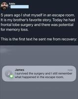

0


Electric vehicles accounted for just 1% of new car sales across Africa in 2025, but a study published in Nature Energy by researchers at ETH Zurich finds that EVs paired with solar off-grid charging systems -- solar panels, batteries and an inverter -- could become cheaper to own than gas-powered equivalents across most of the continent by 2040.
The analysis considered total cost of ownership including sticker price, financing and fuel or charging costs, but excluded policy-related factors like taxes and subsidies. Electric two-wheelers could reach cost parity even sooner, by the end of the decade, thanks to smaller battery packs.
Small cars remain the toughest segment. The biggest obstacle is financing: in some African countries, political instability and economic uncertainty push borrowing costs so high that interest on an EV loan can exceed the vehicle's purchase price. South Africa, Mauritius and Botswana are already near the financing conditions needed for cost parity; countries like Sudan and Ghana would need drastic cuts.
Read more of this story at Slashdot.
The UK's Ministry of Justice has ordered the deletion of the country's largest court reporting archive [non-paywalled source], a database built by data analysis company Courtsdesk that more than 1,500 journalists across 39 media organizations have used since the lord chancellor approved the project in 2021.
Courtsdesk's research found that journalists received no advance notice of 1.6 million criminal hearings, that court case listings were accurate on just 4.2% of sitting days, and that half a million weekend cases were heard without any press notification. In November, HM Courts and Tribunal Service issued a cessation notice citing "unauthorized sharing" of court data based on a test feature.
Courtsdesk says it wrote 16 times asking for dialogue and requested a referral to the Information Commissioner's Office; no referral was made. The government issued a final refusal last week, and the archive must now be deleted within days. Chris Philp, the former justice minister who approved the pilot and now shadow home secretary, has written to courts minister Sarah Sackman demanding the decision be reversed.
Read more of this story at Slashdot.
HP has quietly launched a gaming laptop subscription service called the OMEN Gaming Subscription that lets customers pay a monthly fee to use one of several gaming laptops but never actually own the hardware, even after paying well past the machine's retail price.
The service ranges from $50 a month for an HP Victus 15-inch laptop with an RTX 4050 to $130 a month for an Omen Max 16 with an RTX 5080. At current sale prices, subscribers would exceed the cost of buying the laptop outright within 16 to 19 months; at MSRP, that window stretches to roughly 25 months. In exchange for giving up ownership, subscribers get yearly hardware upgrades, next-day replacements, 24/7 support, and an ongoing warranty. There is a 30-day trial period, but cancelling in the second month triggers steep early termination fees -- $550 for the Victus 15 and $1,430 for the Omen Max 16. Cancellation becomes free only after the 13th month. HP also offers accessories like the HyperX Cloud Alpha Wireless headset as add-on rentals for $8 a month.
Read more of this story at Slashdot.
Sony will ship its last batch of Blu-ray recorders this month, according to Kyodo News, ending the company's decades-long run in a product category it helped create. The recorders targeted exclusively the Japanese domestic market, where households used them to record broadcast television. Sony had already stopped manufacturing the devices and recordable discs about a year ago, and the final shipments are clearing out remaining inventory.
Kyodo attributes the segment's death to the rise of streaming services. Sony will continue selling Blu-ray players "for the time being." The broader Blu-ray ecosystem remains intact. Asus, LG, and Pioneer still produce PC drives in internal and external USB form factors. Panasonic and Verbatim continue manufacturing Blu-ray media. The format turned 20 last year, having debuted at CES 2006 -- one year before Netflix launched its streaming platform.
Read more of this story at Slashdot.
T-Mobile is opening registration today for a beta test of Live Translation, an AI-powered feature that will translate live phone calls into more than 50 languages when it launches this spring.
The feature operates at the network level, so it doesn't require any specific app or device -- beta participants simply dial 87 to activate it on a call. T-Mobile President of Technology and CTO John Saw told The Verge that Live Translation works over VoLTE, VoNR and VoWiFi, meaning it isn't limited to 5G. The only requirement is that a T-Mobile customer must initiate the translation. The beta will be free, though T-Mobile has not said whether the feature will eventually be paywalled.
Read more of this story at Slashdot.
Google on Tuesday expanded its "Results about you" tool to let users request the removal of Search results containing government-issued ID numbers -- including driver's licenses, passports and Social Security numbers -- adding to the tool's existing ability to flag results that surface phone numbers, email addresses, and home addresses.
The update, announced on Safer Internet Day, is rolling out in the U.S. over the coming days. Google also streamlined its process for reporting non-consensual explicit images on Search, allowing users to select and submit removal requests for multiple images at once rather than reporting them individually.
Read more of this story at Slashdot.
The U.S., whose population the Census Bureau did not expect to start shrinking until 2081, may record its first-ever decline as early as this year because of the Trump administration's accelerating immigration crackdown. Census data released in late January showed US population growth slowed to just 0.5% in the year prior to July 2025 -- the lowest rate since the pandemic -- as net migration fell to 1.3 million from a peak of 2.7 million the year before.
Census experts now expect net migration to drop to only 316,000 in the year prior to July 2026 and say the country is "trending toward negative net migration." A joint study by researchers at the American Enterprise Institute and the Brookings Institution estimates that 2026 net immigration could range from a gain of 185,000 to a loss of 925,000. Births exceeded deaths by just 519,000 in the most recent period, a surplus the Congressional Budget Office expects to vanish by 2030. At the low end of the AEI/Brookings range, the overall US population would shrink by more than 400,000 -- something that has never happened since the country began taking censuses in 1790.
Read more of this story at Slashdot.
An anonymous reader shares a report: The Food and Drug Administration has refused to start a review of Moderna's application for its experimental flu shot, the company announced Tuesday, in another sign of the Trump administration's influence on tightening vaccine regulations in the U.S. Moderna said the move is inconsistent with previous feedback from the agency from before it submitted the application and started phase three trials on the shot, called mRNA-1010. The drugmaker said it has requested a meeting with the FDA to "understand the path forward."
Moderna noted that the agency did not identify any specific safety or efficacy issues with the vaccine, but instead objected to the study design, despite previously approving it. The company added that the move won't impact its 2026 financial guidance. Moderna's jab showed positive phase three data last year, meeting all of the trial goals. At the time, Moderna said the stand-alone flu shot was key to its efforts to advance a combination vaccine targeting both influenza and Covid-19.
Read more of this story at Slashdot.
Discord has moved to calm a user backlash over its upcoming age verification mandate by clarifying that the "vast majority" of people will never be asked to confirm their age through a face scan or government ID.
The platform said it will instead rely on an internal "age prediction" model that draws on account information, device and activity data, and behavioral patterns across its communities to estimate whether someone is an adult. Users whose age the model cannot confidently determine will still need to submit a video selfie or ID.
Those not verified as adults or identified as under 18 will be placed in a "teen-appropriate" experience that blocks access to age-restricted servers and channels. The clarification came after users threatened to leave the platform and cancel Nitro subscriptions, and after a third-party vendor used by Discord for age verification suffered a data breach last year that exposed user information and a small number of uploaded ID cards.
Read more of this story at Slashdot.
An anonymous reader shares a report: The most seductive narrative in American work culture right now isn't that AI will take your job. It's that AI will save you from it. That's the version the industry has spent the last three years selling to millions of nervous people who are eager to buy it. Yes, some white-collar jobs will disappear. But for most other roles, the argument goes, AI is a force multiplier. You become a more capable, more indispensable lawyer, consultant, writer, coder, financial analyst -- and so on. The tools work for you, you work less hard, everybody wins.
But a new study published in Harvard Business Review follows that premise to its actual conclusion, and what it finds there isn't a productivity revolution. It finds companies are at risk of becoming burnout machines.
As part of what they describe as "in-progress research," UC Berkeley researchers spent eight months inside a 200-person tech company watching what happened when workers genuinely embraced AI. What they found across more than 40 "in-depth" interviews was that nobody was pressured at this company. Nobody was told to hit new targets. People just started doing more because the tools made more feel doable. But because they could do these things, work began bleeding into lunch breaks and late evenings. The employees' to-do lists expanded to fill every hour that AI freed up, and then kept going.
Read more of this story at Slashdot.
Iceland in October classified the potential collapse of the Atlantic meridional overturning circulation -- the ocean current system that ferries warm water northward from the tropics and essentially functions as the country's central heating -- as a national security risk, a designation that amounts to a formal reckoning with the possibility that climate change could render the island nation uninhabitable.
Several recent studies have found the AMOC far more vulnerable to breakdown than scientists had long assumed. One, analyzing nine models under high-emission scenarios, saw the current weaken and collapse in every single instance; even under the Paris agreement's emission targets, the researchers estimated a 25% chance of shutdown. Stefan Rahmstorf, an oceanographer at Germany's Potsdam Institute for Climate Impact Research and a co-author of that study, said it was "wrong to assume this was low probability." Simulations of a post-collapse world project Icelandic winter extremes plunging to minus-50 degrees Celsius, and sea ice surrounding the country for the first time since Viking settlement.
Iceland's national strategy for dealing with AMOC risks is scheduled to be finalized by 2028. The country has also flagged that NASA Goddard, a key source of AMOC modeling, has been targeted for significant staff and budget cuts under the current U.S. administration.
Read more of this story at Slashdot.
An anonymous reader shares a report: The Trump administration wants some of the world's largest technology companies to publicly commit to a new compact governing the rapid expansion of AI data centers, according to two administration officials granted anonymity to discuss private conversations.
A draft of the compact obtained by POLITICO lays out commitments designed to ensure energy-hungry data centers do not raise household electricity prices, strain water supplies or undermine grid reliability, and that the companies driving demand also carry the cost of building new infrastructure.
The proposed pact, which is not final and could be subject to change, is framed as a voluntary agreement between President Donald Trump and major U.S. tech companies and data center developers. It could bind OpenAI, Microsoft, Google, Amazon, Facebook parent Meta and other AI giants to a broad set of energy, water and community principles. None of these companies immediately responded to a request for comment.
Read more of this story at Slashdot.
An anonymous reader shares a report: In 1966, a beach-ball-size robot bounced across the moon. Once it rolled to a stop, its four petal-like covers opened, exposing a camera that sent back the first picture taken on the surface of another world. This was Luna 9, the Soviet lander that was the earliest spacecraft to safely touchdown on the moon. While it paved the way toward interplanetary exploration, Luna 9's precise whereabouts have remained a mystery ever since.
That may soon change. Two research teams think they might have tracked down the long-lost remains of Luna 9. But there's a catch: The teams do not agree on the location. "One of them is wrong," said Anatoly Zak, a space journalist and author who runs RussianSpaceWeb.com and reported on the story last week. The dueling finds highlight a strange fact of the early moon race: The precise resting places of a number of spacecraft that crashed or landed on the moon in the run up to NASA's Apollo missions are lost to obscurity. A newer generation of spacecraft may at last resolve these mysteries.
Luna 9 launched to the moon on Jan. 31, 1966. While a number of spacecraft had crashed into the lunar surface at that stage of the moon race, it was among the earliest to try what rocket engineers call a soft landing. Its core unit, a spherical suite of scientific instruments, was about two feet across. That size makes it difficult to spot from orbit. "Luna 9 is a very, very small vehicle," said Mark Robinson, a geologist at the company Intuitive Machines, which has twice landed spacecraft on the moon.
Read more of this story at Slashdot.
Reports of the compact disc's death may have been slightly premature, according to a new analysis from Stat Significant that finds CD sales as a share of U.S. music industry revenue have quietly stabilized after years of steep decline. RIAA data shows CD revenue share fell from 7.15% in 2018 to 3.04% in 2022 but has since flatlined at roughly 3%, coming in at 3.14% in 2023 and 3.06% in 2024.
Google search traffic for "CD Player" has ticked upward over the past 16 months after two decades of near-continuous decline, and a May 2023 YouGov poll found 53% of American adults willing to pay for music on CDs -- ahead of vinyl at 44% and online streaming at 50%. Respondents under 45 were more likely to express interest in buying physical formats than older cohorts. But on the supply side, Discogs data shows vinyl remains the dominant format for new physical releases; artists have not meaningfully shifted back toward CD production.
Read more of this story at Slashdot.
hackingbear writes: China's Bytedance has released Seedance 2.0, an AI video generator which handles up to four types of input at once: images, videos, audio, and text. Users can combine up to nine images, three videos, and three audio files, up to a total of twelve files. Generated videos run between 4 and 15 [or 60] seconds long and automatically come with sound effects or music.
Its performance is unfortunately so good that it has forced the firm to block its facial-to-voice feature after the model reportedly demonstrated the ability to generate highly accurate personal voice characteristics using only facial images, even without user authorization.
In a recent test, Pan Tianhong, founder of tech media outlet MediaStorm, discovered that uploading a personal facial photo caused the model to produce audio nearly identical to his real voice -- without using any voice samples or authorized data. [...]
Read more of this story at Slashdot.
Reed Albergotti / Semafor : OpenAI announced Monday that the US military will get access to ChatGPT via GenAI.mil; sources say the move came after months of deliberation among employees — THE SCOOP — OpenAI's announcement Monday that the US military will get access to ChatGPT came after months of deliberation …
Sanuj Bhatia / Android Central : Google releases Android 17 Beta 1, which requires developers to optimize apps for foldables and large screens, includes performance improvements, and more — The beta that never was. … What you need to know — Google has released Android 17 beta 1 shortly after wrapping up Android 16 QPR3 testing.
Riley Griffin / Bloomberg : Meta plans to spend more than $10B to build a 1GW data center campus in Lebanon, Indiana, expected to be operational at the end of 2027 or in early 2028 — Meta Platforms Inc. said it will spend more than $10 billion to build a data center campus in Lebanon, Indiana, ranking it among …
Jonathan Vanian / CNBC : Meta launches an AI feature that lets Threads users temporarily personalize their feed by specifying topics in a public post that begins with “Dear Algo” — Meta on Wednesday debuted an AI feature called “Dear Algo” that lets Threads users personalize their content-recommendation algorithms.
Aisha Malik / TechCrunch : Amazon Pharmacy plans to bring same-day prescription delivery to almost 4,500 US cities and towns by the end of 2026, adding nearly new 2,000 communities — Amazon Pharmacy, the retail giant's online pharmacy, plans to bring same-day prescription delivery to almost 4,500 U.S. cities and towns …
Tim De Chant / TechCrunch : Inertia, co-founded by ex-Twilio CEO Jeff Lawson to build one of the world's most powerful lasers for a grid-scale fusion power plant, raised a $450M Series A — Inertia Enterprises has raised $450 million to build one of the world's most powerful lasers, which it hopes will serve …
Z.ai : Z.ai launches GLM-5, its flagship open-weight model, saying it has best-in-class performance among open-source models in reasoning, coding, and agentic tasks — We are launching GLM-5, targeting complex systems engineering and long-horizon agentic tasks. Scaling is still one of the most important ways …
Casey Newton / Platformer : Source: OpenAI disbanded its mission alignment team in recent weeks and transferred its employees; team lead Joshua Achiam will take on a “chief futurist” role — OpenAI disbanded its mission alignment team in recent weeks and transferred its seven employees to other teams, Platformer has learned.
PYMNTS.com : London-based commerce and payments infrastructure provider Rezolve Ai agrees to acquire London-based cashback rewards company Reward for $230M — Commerce and payments infrastructure provider Rezolve Ai has acquired U.K.-based cash-back rewards company Reward. — Get the Full Story
Carmen Arroyo / Bloomberg : Google told advertisers that it is integrating shopping features into Search's AI Mode and Gemini; users can now buy items from Etsy and Wayfair within Gemini — Google is adding a way for consumers to buy things while seeking artificial intelligence-powered answers on search and in its Gemini chatbot …
Stephanie Palazzolo / The Information : Source: to catch leakers, OpenAI security staff use a custom ChatGPT with access to Slack, email, and docs that cross-references news articles with access logs — Here at The Information, we're always trying to break through the hype to understand how folks are actually using AI in the real world.
Sarah Perez / TechCrunch : TikTok US launches an opt-in Local Feed for content tied to travel, news, events, shopping, and dining near the user's current location, after changing its ToS — TikTok on Wednesday announced the launch of a new “Local Feed” in the U.S. version of the app, which displays content related to travel …
Zoë Hitzig / New York Times : An OpenAI researcher who helped shape how models were built and priced says she quit after two years due to “deep reservations” about ads and OpenAI's strategy — This week, OpenAI started testing ads on ChatGPT. I also resigned from the company after spending two years …
Kim Mackrael / Wall Street Journal : A Dutch court orders an investigation into alleged mismanagement at Chinese-owned chip company Nexperia and upholds the suspension of CEO Zhang Xuezheng — Investigation set to prolong fight for control of a key automotive supplier — A Dutch court ordered an investigation …
Russell Brandom / TechCrunch : Meridian, which uses AI to make financial modeling and spreadsheets more “predictable and auditable”, exits stealth and raised a $17M seed at a $100M valuation — The fight to tame spreadsheets with AI isn't over yet. A new company called Meridian has emerged from stealth …
0